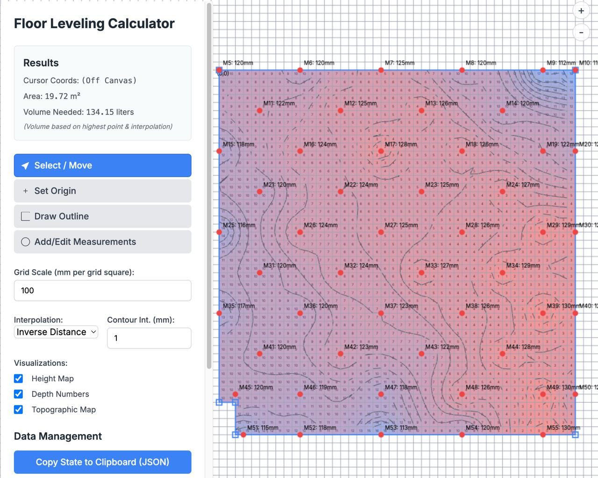

Floor Leveling Calculator
A tool to calculate how much self levelling compound will you need to create a level floor.
Throw a laser level line, measure at multiple places in the room, record the height and location of the measurement
in relation to an origin (say one corner of the room), then input the data into you collected into the calculator
and you'll see how many liters of self levelling compound you'll need to create a level flat plate at the highest
point you measured. Then decide how much higher you want to go, you can use the calculated area times the height.
